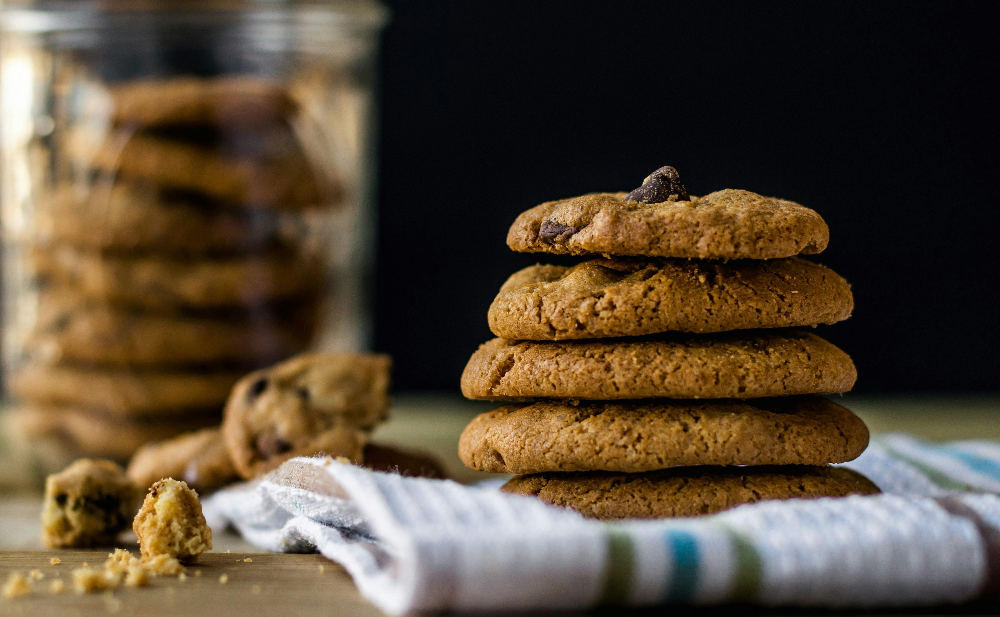

La Fabrique Des Saveurs
Notre délicieuse recette des cookies moelleux

Confectionnés avec amour, nos cookies sont riches et réconfortants, dotés d’un cœur moelleux et de bords
légèrement croquants. Les généreuses pépites de chocolat fondent en bouche, créant une explosion de saveurs
gourmandes à chaque bouchée. Parfaits pour accompagner un verre de lait ou une pause café, ces cookies
combleront toutes vos envies sucrées.
Ingrédients raffinés :
250 g de farine
125 g de beurre mou
100 g de sucre
1 œuf
1 cuillère à café de levure chimique
200 g de pépites de chocolat
1 pincée de sel
Etapes :
1: Mélangez le beurre et le sucre jusqu'à obtenir un mélange crémeux..
2: Ajoutez l'œuf, puis incorporez la farine, la levure et le sel.
3: Incorporez les pépites de chocolat.
4: Formez des boules de pâte et disposez-les sur une plaque de cuisson.
5: Cuire à 180°C pendant 10-12 minutes.